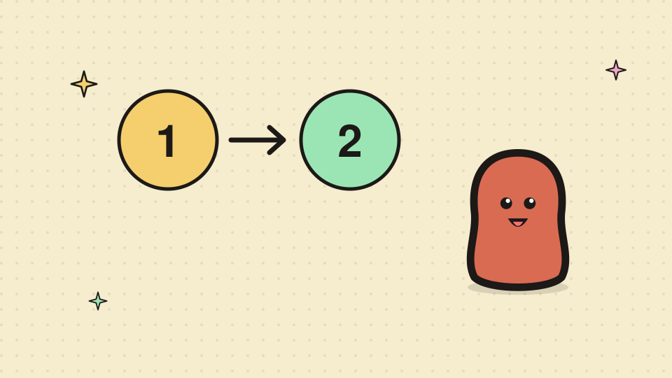
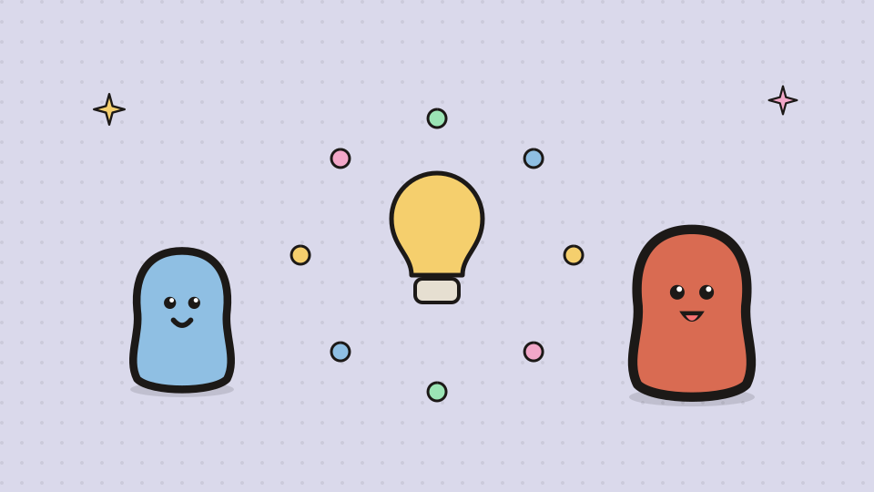
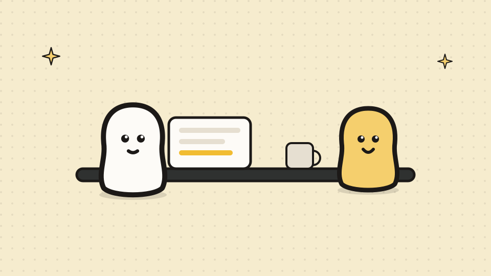
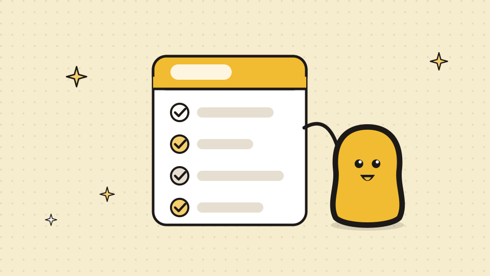
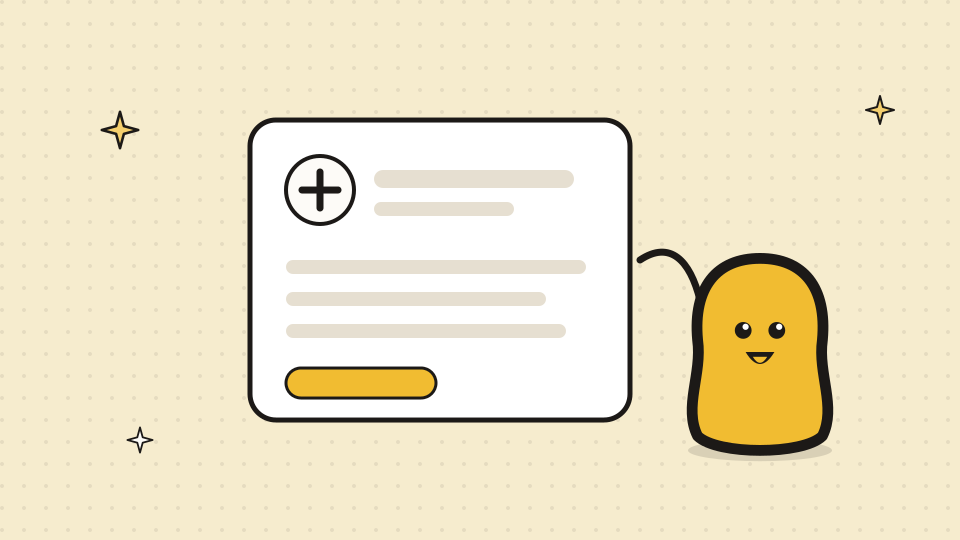
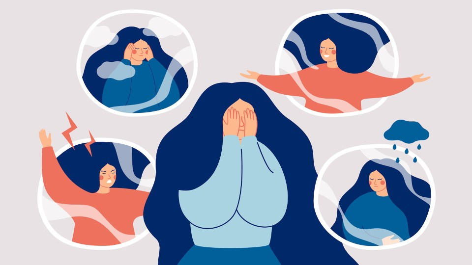
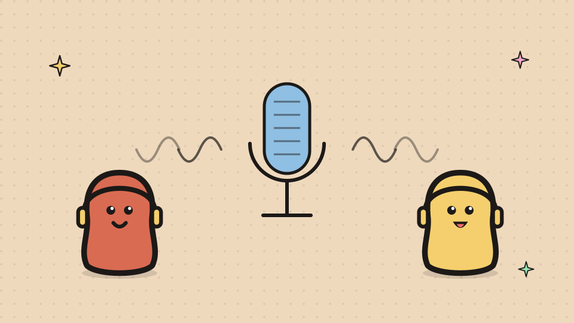
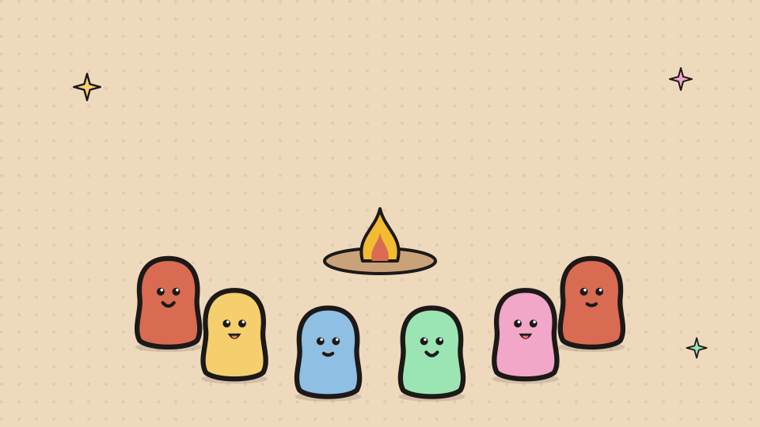

ADHDme Learn
ADHD is complex and everyone has an opinion. Here is what the doctors in this network actually point people to: Australia’s clinical guideline, the government’s own information, and the reads and resources that hold up.
Featured

No referral needed to look. How booking with ADHDme works.Browse every GP, see the fee on the practice’s page, and book in two steps. No account, no upfront fee.
Diagnosed as an adult? What the research actually says.A late diagnosis rewrites the past. The evidence base is clearer and kinder than most people expect.
Body doubling: the least complicated focus tool there is.Sitting near someone else who is working can be enough to start. Here is why it helps and how to try it.
The ADHD Guideline, written for people with ADHDAustralia’s clinical guideline, rewritten by AADPA for the people it is about: what good assessment and care look like.
ADHD explained simply: symptoms, causes and getting helphealthdirect, the Australian Government’s health information service: what ADHD is, how it is assessed, and where to get help.ADHD in Women and Girls: Why Female Symptoms Slip Through Diagnostic CracksADDitude Magazine: why ADHD in women and girls is missed, and what a better assessment asks.Getting assessed
No referral needed to look. How booking with ADHDme works.Browse every GP, see the fee on the practice’s page, and book in two steps. No account, no upfront fee.ADHD explained simply: symptoms, causes and getting helphealthdirect, the Australian Government’s health information service: what ADHD is, how it is assessed, and where to get help.The ADHD Guideline, written for people with ADHDAustralia’s clinical guideline, rewritten by AADPA for the people it is about: what good assessment and care look like.
Focus and everyday life
Body doubling: the least complicated focus tool there is.Sitting near someone else who is working can be enough to start. Here is why it helps and how to try it.You Can’t Train Away ADHD Executive DysfunctionADDitude Magazine: why executive dysfunction is not a discipline problem, and what helps instead.How to ADHDJessica McCabe’s channel: short, practical videos on living with an ADHD brain.
Late recognition
Diagnosed as an adult? What the research actually says.A late diagnosis rewrites the past. The evidence base is clearer and kinder than most people expect.ADHD in Women and Girls: Why Female Symptoms Slip Through Diagnostic CracksADDitude Magazine: why ADHD in women and girls is missed, and what a better assessment asks.Study: Women with Undiagnosed ADHD Suffer Poor Self-Esteem, Mental HealthADDitude Magazine: a study on undiagnosed ADHD in adult women, self-esteem and mental health.
Wellbeing
When Neurodivergent Burnout Reaches Its Breaking PointADDitude Magazine: recognising neurodivergent burnout and masking before they reach breaking point.

How’s Your Emotional Resilience? Learning to Cope with Intense ADHD FeelingsADDitude Magazine: learning to cope with intense ADHD feelings without being run by them.
Yarning Disability: “Spicy Brain”, Mat Fink on adult ADHD and autismFirst Peoples Disability Network’s podcast, episode 3: adult ADHD and autism, in conversation.Guidelines and resources
The ADHD Guideline, written for people with ADHDAustralia’s clinical guideline, rewritten by AADPA for the people it is about: what good assessment and care look like.

ADHD and Aboriginal and Torres Strait Islander PeoplesThe Australian ADHD Guideline’s factsheet for Aboriginal and Torres Strait Islander peoples.ADHD explained simply: symptoms, causes and getting helphealthdirect, the Australian Government’s health information service: what ADHD is, how it is assessed, and where to get help.